Stable addresses
In the previous section, we learned how pointers can help us pinpoint the location of a target value in memory, no matter how much the memory layout changes. We also learned that the pointer path has to start with a stable address if we want our hack to be reliable. This section will cover techniques to find stable addresses and follow pointer paths to get to the values we want to read or write.
What is a stable address?
To explain stable addresses, we first need to cover modules. A module is a file that contains code and data that is loaded into memory when a program runs. In typical cases, you have an EXE (Executable) file, which contains the entry point of the program (first code executed), and then a bunch of DLL (Dynamic Link Library) files, which contain additional code that the EXE can reference. When a module is loaded into memory, it is assigned a base address, which is the memory address where the module starts.
A stable address is the address of a value that is always located at the same offset, after the starting address to its parent module. The notation is usually module_name + offset, where module_name is the name of the module, and offset is a fixed value that represents the distance from the module's base address. For example, Game.dll + 12C0 means "the address 12C0 bytes after the start of the Game.dll module".
Why are stable addresses important?
Stable addresses are crucial for building memory hacking programs that are robust and reliable. If we can find a stable address that holds a pointer to a structure that we are interested in, we can follow it to get to the values we want to read or write, no matter how much the game changes things in memory.
Without stable pointers, we would have to find addresses from scratch every time we start the game or change the game state in a way that moves things around in memory.
How to find stable pointer paths
There are several ways to find pointer paths that start with a stable address. Fortunately, because this is a very common task in memory hacking, Cheat Engine provides a few tools to help us with that. This guide will only demonstrate some of the easiest techniques, but there are many ways to find them, that may or may not work depending on the target process.
For the examples, we will use the coin count value from the Slime Rancher demo that we have found in a previous section. Start by attaching Cheat Engine to the game process and finding the address of the coin count value as described in the "Finding values with Cheat Engine" section.
Going backwards with the debugger
Let's start with the most reliable way to find a stable address, but also one of the most tedious ones. Starting with the address of the coin count value, we will use the "Find out what writes to this address" feature of Cheat Engine to find the code that writes to the coin count value, and inspect it to see what the offset of the coin count member is within the structure that holds it. Then, we will look for a pointer to that structure, and so on, until we find a stable address.
Start by right-clicking the coin count address in Cheat Engine from the address list, and selecting "Find out what writes to this address". Confirm that you want to attach the debugger. This will open the watcher window and add an entry whenever the game writes to the address.
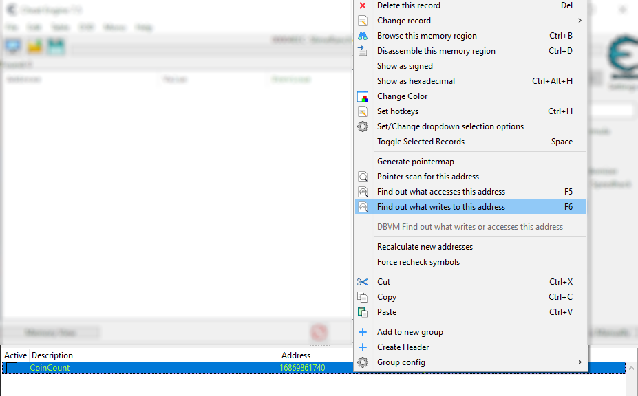
Now, sell a plort in the game to cause it to write a new coin count value. You should see an entry appear in the watcher window. Click it, and then click the "More information" button on the right. This opens another window with extra info.
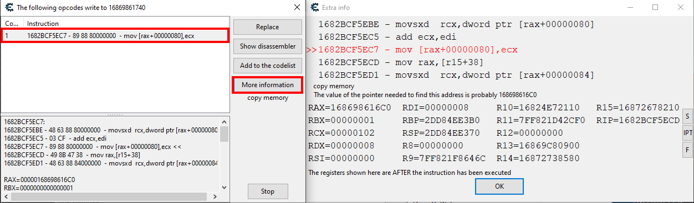
So let's explain what we just did here. In the first window, we have a list of all instructions that have been writing a value at the coin count address. If the same instruction writes to that address multiple times, it will appear only once, but the counter on the leftmost column will show how many times it did.
We didn't really explain what instructions are. Basically, they are the lines of code that the game is executing. The instructions are stored in memory, and the CPU reads them one by one to execute the program.
The instructions that we are seeing in the memory of a process are in a format called assembly language. This is a low-level language, very close to the machine code that the CPU executes. Each instruction is represented by a mnemonic (a short word that represents the operation), followed by some parameters that tell the CPU what to do. For example, the MOV instruction moves a value from one place to another, and the ADD instruction adds two values together.
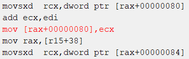
An example of a few assembly instructions, from the "Extra info" window of Cheat Engine.
Developers very rarely write in assembly language directly, but instead write code in a high-level language that is then transformed (through compilation or interpretation) into assembly. With memory hacking, we always have to work with assembly code, which is much harder to read and understand than the original code.
Note
This tutorial is not going to cover assembly language, because this is a much larger topic. We will only cover the basic elements required for our specific case. However, it's a good idea to learn more about it if you want to become proficient in memory hacking. You can find many resources online to learn assembly.
Back to our example, the "Extra info" window shows us the assembly code that wrote to the coin count address. The exact instruction that wrote to the address is highlighted in red:
mov [rax+00000080],ecx
It's a MOV instruction, which means that we are copying a value from one place to another. The MOV instruction takes two arguments: the destination and the source. In this case, the destination is [rax+00000080], and the source is ecx. So that means it is copying the value of the ecx register to the address [rax+00000080]. If you don't know what registers are, to simplify, you can think of them as a limited set of variables that the CPU can use to store values temporarily.
What's interesting here is that the instruction specifies an offset of 80 (in hexadecimal) bytes from the rax register. This typically means that rax stores the address of a structure that contains the coin count value at an offset of +80 bytes. Looking at the bottom part of the "Extra info" window, we can see a dump of the values in CPU registers at the time the instruction was executed. Take note of the value of the rax register, as this is the address of the parent structure holding the coin count. In my case, it's 168698616C0, but yours will be different. Once you've noted it down, and also noted down the offset (+80), you can close both windows.
Now, let's take a look back at the pointer path example from the previous section:
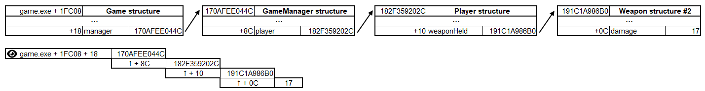
For now, we have only found the last offset of the pointer path. For the next step, we need to find memory values that hold the address of the parent structure. You know how to do that already: use the main window of Cheat Engine to scan for the value of the rax register.
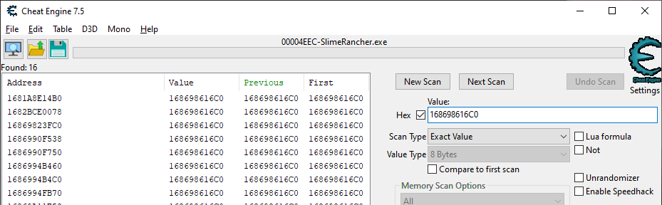
Scanning for the value of the rax register in Cheat Engine. Replace the searched value with the value of rax you have noted before. Don't forget to pick 8 Bytes in the value type dropdown (addresses are 8-byte integers in 64-bit programs), and to check the Hex checkbox to let you input a hexadecimal number.
This scan will give you a list of pointers that hold the address of the parent structure. If you look at the pointer path diagram from before, we need to keep finding offsets and parent structure addresses until we reach a stable address. So, now, we can repeat the steps we just did with the coin count address, but using the addresses we just found with the scan.
For each scan result:
- Use "Find out what accesses this address" (or press Ctrl+F5) to find the instruction that reads the pointer. We have used "writes" before, but finding instructions that read the pointer is more reliable after the first step.
- Mess around in the game until instructions appear in the watcher window. If it never does, give up on this pointer and try another one.
- Look at the assembly code to find the offset of the next structure in the same way we did before, and take note of the address of the parent structure, and the offset (sometimes there is no offset, in that case it's just
+0). - Scan for the parent structure address in Cheat Engine to find the next pointers.
- If the scan brings up stable addresses (they appear in green), you can stop there. If not, repeat the whole process until it does.
Be careful with this process, as it's easy to get lost or to fall into a loop of pointers that reference each others. If you are stuck, try to go back a few steps and try another path.
Tip
Try doing at least a couple of steps of this process to make sure you understand how it works, but don't feel like you have to go all the way to the end. It's a very time-consuming process, and there are easier ways to find stable addresses (keep reading to find out!).
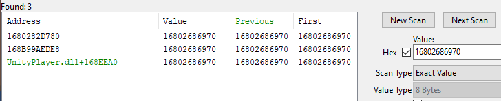
Repeating these steps will (hopefully) eventually lead you to a stable address. The last address in the list on this screenshot, highlighted in green, is stable.
Once you have a stable address to start with, click the "Add Address Manually" button on the right edge of the Cheat Engine main window, pick the target value type (in our case, 4 Bytes), check "Pointer", and start filling in the fields. The bottommost field should be the stable address you found, and then the fields above it should be the offsets. Click "Add Offset" as needed to add more offset fields. Once you are done, the value shown next to the address field should be the value of the coin count.
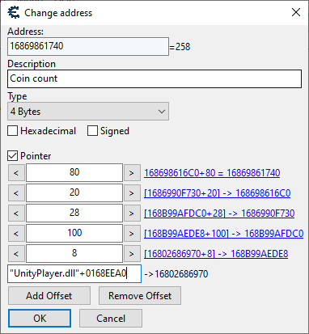
An example pointer path added manually in Cheat Engine. Note that the +80 offset we found earlier is the first one when read from top to bottom.
Now that we've done all this work, we finally have a stable pointer path that we can use to read or write the coin count value, no matter how much the game changes things in memory. Hopefully. In fact, there is no guarantee that the particular path we have found will work no matter what we do in the game. Maybe one of the structures we traverse is not guaranteed to hold a pointer to the next structure in all cases. Or maybe it does and everything works out just fine. To make sure, we have to test it out in the game, restart the game and test it again, and so on, to make sure that the path is indeed stable. If it's not, we have to go back in the process steps and find other paths.
So all in all, this process is methodical and rather reliable, but it's also very time-consuming and requires a lot of manual work. It's a good idea to try it out at least once to understand how it works, but let's find out about another method that is much faster and easier.
Using the pointer scanner
The pointer scanner is a tool in Cheat Engine that can automatically find pointer paths for you. It's not always reliable, but it's often a very efficient way to find stable addresses.
So let's start over (restart the game if you have to) and find the coin count value again, as we did in the "Finding values with Cheat Engine" section.
Start by right-clicking the address of the coin count value in Cheat Engine, and selecting "Pointer scan for this address".
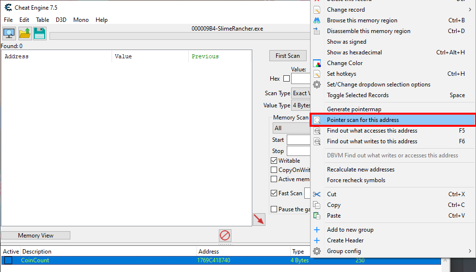
This will open the pointer scanner option window. Most settings are fine as they are, but the most important one is the "max level" setting. This is the maximum number of pointers that the scanner will follow. The higher the number, the longer the scan will take, but the more likely it is to find a stable address.
Generally, you should start with a low number for the max level, like 2 or 3, and increase it if you don't find any stable addresses. However, Slime Rancher is a Unity game, which is known to have a lot of pointer layers, so we are going to use a max level of 5.
Note
Increasing the max level will make the scan exponentially slower. To give you an idea, a max level of 7 may take a few seconds, a max level of 8 may take several minutes, and a max level of 9 may take days.
In addition to the max level setting, I also recommend you check the "Pointers must end with specific offsets", and add the +80 final offset that we have found earlier through the "Find out what writes to this address" method. This will make the scan faster and more reliable, as it will make sure pointer paths end with the offset we know is correct.
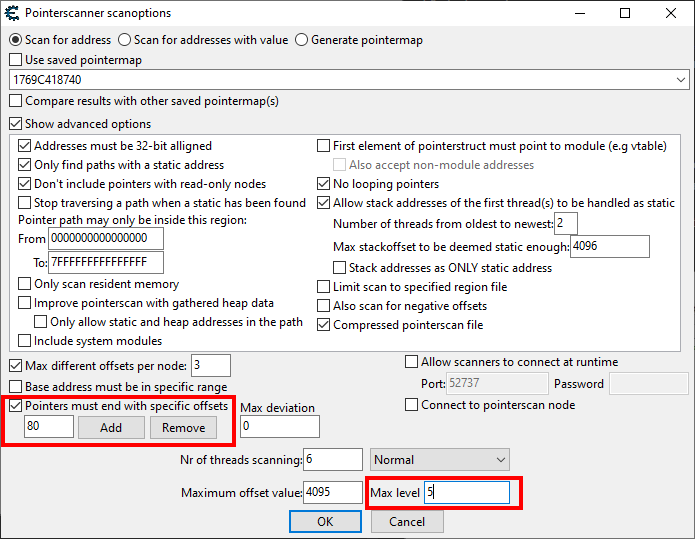
Once you have set up the options, click "OK" to start the scan. Cheat Engine will ask you to save a .ptr file. Try to keep these organized, they are quite useful if you want to go back after making a mistake, or stop and then resume your hacking project later on.
Tip
A recommended way to keep your .ptr files organized is to create a folder for each game you are hacking, and then create a subfolder for each hack you are working on. Then, name your .ptr files with a descriptive name, a max level indication, and an index (we will see why in a moment). For this first one, I am going to use D:\Hacking\SlimeRancherDemo\CoinCount\coincount-l5-001.ptr.
The scan may take a while, so be patient. When it's done, you will see a list of results.
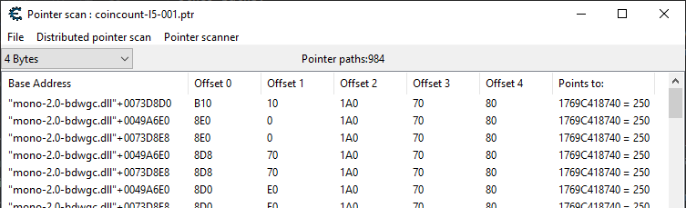
This window shows all the pointer paths that the scanner has found. The number of results is displayed above the table (in my screenshot, it's 984, but yours will probably be slightly different). The "Points to" column shows the final address and its value. These should all have a value corresponding to your current coin count for now.
Note
The values shown in the "Points to" column are not refreshed in real time. They are refreshed whenever you select the row.
So, in the current state of the game, all of these stable pointer paths lead to our coin count. But that doesn't mean they will always do. We have to test them out to make sure they are indeed stable. The best way to do that is to mess with the game state, and perform an additional scan to filter out results that no longer point to our coin count.
The first thing we can do is to go back to the menu and start a new game. This should shuffle things around in memory, but the paths that are stable should still point to the coin count. When you've done that, go back to the pointer scan results window, and in the "Pointer scanner" menu, select "Rescan memory - Removes pointers not pointing to the right address".
The rescan window that opens allows you to specify what you want to filter out. The easiest scan we can do is to pick "Value to find" and enter the expected value we should be pointing to. In our case, because we just started a new game, we are looking for the value 250 (the starting coin count).
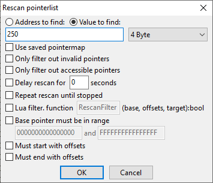
Click "OK" to start the rescan. This will effectively filter out paths that no longer point to an address with a value of 250.
Tip
Every time you rescan, you are asked to save a new .ptr file. As stated before, this is useful to go back to a previous state. Following the convention from before, I am going to save this one as D:\Hacking\SlimeRancherDemo\CoinCount\coincount-l5-002.ptr.
When the rescan is done, your list should have been trimmed significantly.
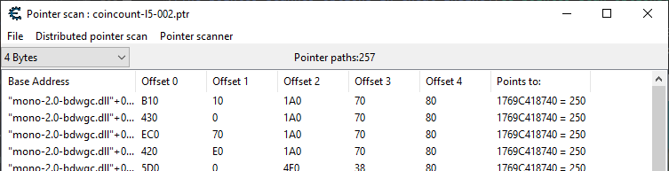
We now have 257 results, down from 984. Your numbers may be different.
We can trim the list further by repeating the process of messing with the game state, and then rescanning. For example, you can sell a plort to change the coin count, and then rescan for the new value. This will filter out paths that don't point to the new coin count value.
One of the best ways to mess with game state is to close the game and start it back up. This will shuffle things around in memory a lot, which means that paths that still hold after multiple reboots are very likely to be reliable.
Note
After you restart the game, don't forget to re-attach the process in Cheat Engine! You don't have to close any window, everything will update automatically.
After a few iterations of this process, you should have a list of stable pointer paths that you can use to read or write the coin count value.
There is no way to know for sure if any of these will always hold no matter what you do in the game. Just keep iterating until you are confident enough that the paths are stable.
If all of your results get filtered out, it can mean one of the following:
- You have made a mistake in the rescan options. Make sure you are looking for the right value, and that the process is attached. You can always load a previous
.ptrfile to go back to a previous state without having to restart from scratch. - There are no stable pointer paths with the specified max level. Start all over again with an increased max level (in the Slime Rancher demo, you should be able to find stable paths with a max level of 5).
- There are no stable pointer paths for your value at all. This can happen for example when one of the target structures may be at various indexes in a list, or if the game has cheat protections.
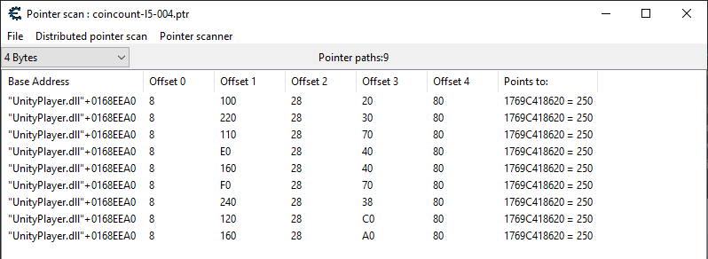
In this case, we quickly reach a list of 9 paths that are seemingly stable.
When you are confident in your results, pick any of the paths that you have found (it's a good idea to pick shorter ones, but in our case, they all have 5 offsets). Double-click any result to add the pointer path to the address list in the main window of Cheat Engine.
You now have a stable way to read or write the coin count value, no matter how much the game changes things in memory. Congratulations!
Note
Cheat Engine allows you to save your address list and more as a .ct file. This is useful to keep your progress, and to share it with others. You can find the save option in the "File" menu.
Next part
We have now covered the basics of finding stable addresses and following pointer paths to get to the values we want to read or write. In the next section, we will learn another key concept in memory hacking: modifying the game code.